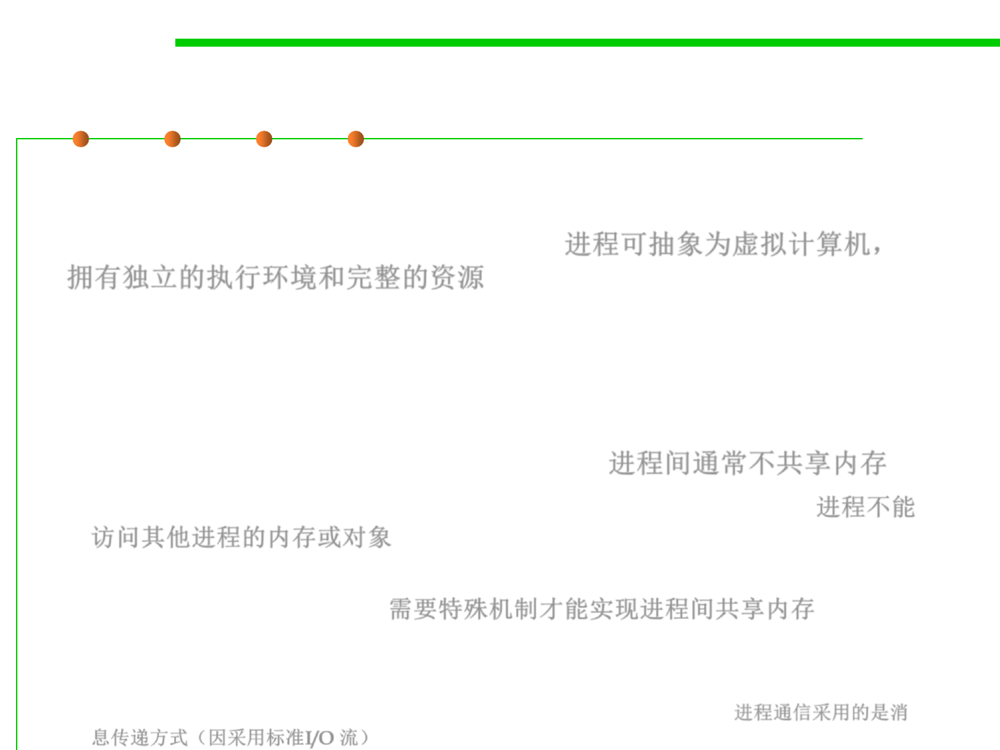

Process
10.1 Concurrency and Thread-Safety
▪ The process abstraction is a virtual computer (a self-contained
execution environment with a complete, private set of basic run-time
resources, in particular, memory space). 进程可抽象为虚拟计算机，
拥有独立的执行环境和完整的资源
– It makes the program feel like it has the entire machine to itself – like a
fresh computer has been created, with fresh memory, just to run that
program.
▪ Just like computers connected across a network, processes
normally share no memory between them. 进程间通常不共享内存
– A process can’t access another process’s memory or objects at all. 进程不能
访问其他进程的内存或对象
– Sharing memory between processes is possible on most operating systems,
but it needs special effort. 需要特殊机制才能实现进程间共享内存
– By contrast, a new process is automatically ready for message passing,
because it is created with standard input & output streams, which are the
System.out and System.in streams you’ve used in Java. 进程通信采用的是消
息传递方式（因采用标准I/O 流）